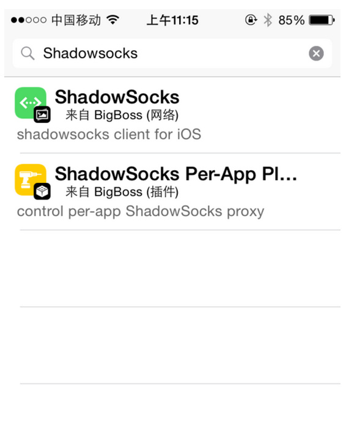
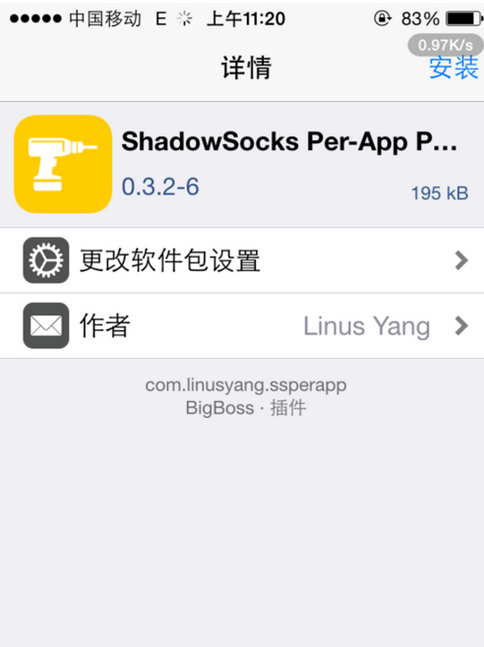
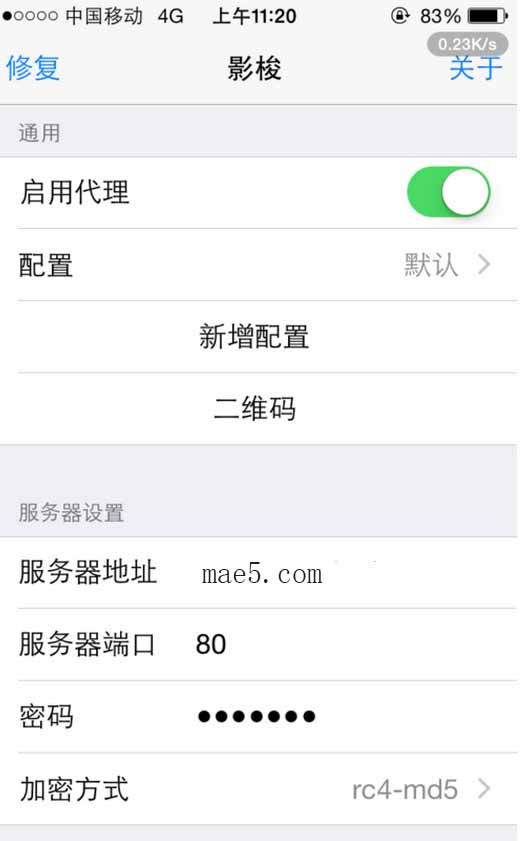
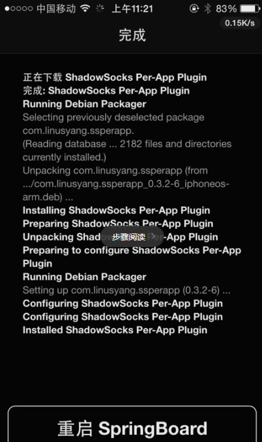
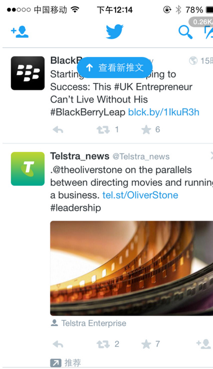

影梭 Shadowsocks
IOS客户端使用影梭教程
iPhone/iPad
一、未越狱IOS如何使用影梭
1、IOS9以下需要appstore美国账号才能下载影梭的app 国内的被屏蔽了.使用下载地址：https://itunes.apple.com/us/app/shadowsocks/id665729974?ls=1&mt=8
2、如何注册美国的APPstore账号 http://jingyan.baidu.com/article/bad08e1eb21db709c851211a.html
3、IOS9未越狱请在Apple Store中购买Surf使用 ：iOS9未越狱使用全局教程
4、这是个自带 SS 的浏览器，后台获取账号信息
点击右上方的 + 号，然后电机左上角的齿轮，设置你的账号：
二、iOS 越狱了的话，直接在 Cydia 里搜索 Shadowsocks安装，具体步骤：
1、在桌面点击Cydia图标

2、在cydia里搜索shadowsocks

3、选择并安装——确定


4、安装过程如图——完成点击回到cydia

5、回到桌面点击影梭图标进入程序

6、勾选——启用代理——设置端口、账号、密码、加密方式——勾选自动代理

7、点击应用内代理——跳转至cydia


8、继续安装——完成重启设备


9、再次进入影梭程序——应用内代理——前往设置——勾选启用——勾选禁用SPDY——应用程序——勾选需要的软件即可——完成设置


10、测试一下OK



PS：ios8以上如须观看youtube视频须勾选设置插件中“ios8代理视频”
三、测试是否已经科学上网
如果你的浏览器可以正常访问诸如 Google、YouTube、Twitter、Facebook 之类的在国内消失了的网站，
那么就恭喜你，用 影梭 科学上网方式成功！